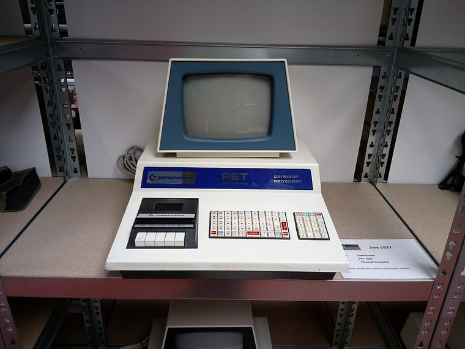

[ IDENTIFIED ENCLOSURE // VINTAGE DESKTOP AND PORTABLE SYSTEMS ]
Commodore PET 2001-8 computer enclosure
Integrated keyboard, 9-inch CRT and main unit; early/late cabinet dimensions vary and are not normalized in the cited manual. Proprietary PET board, CRT and keyboard assemblies; board/ROM/keyboard must match 2001 generation.

VARIANT / ARCHIVAL CAVEAT: 2001-8N/8C differ in keyboard/case details; later universal-keyboard PET is not a cosmetic swap. Record board number and CRT type.
Mechanical specifications and fit
| Catalog identity / revision | Commodore PET 2001-8 computer enclosure |
|---|---|
| Dimensions / construction | Integrated keyboard, 9-inch CRT and main unit; early/late cabinet dimensions vary and are not normalized in the cited manual. |
| Drive bays / storage | No internal mass-storage bay on 2001-8; cassette deck integrated in early keyboard. |
| Board, system and compatibility | Proprietary PET board, CRT and keyboard assemblies; board/ROM/keyboard must match 2001 generation. |
| Revision / service note | 2001-8N/8C differ in keyboard/case details; later universal-keyboard PET is not a cosmetic swap. Record board number and CRT type. |
Preservation and installation notes
Match the case and all internal assemblies by model suffix and board/drive revision; do not substitute visually similar generations.
- Photograph the complete model label, assembly revision and option identifiers before opening; keep matching covers, brackets, shields, trays and fasteners together.
- Before energizing any restored unit, check the period service procedure, insulation and PSU condition. A CRT system can retain hazardous voltage; use a qualified technician for CRT service.
Manufacturer manuals and model-specific sources
- Commodore PET 2001-8 computer enclosure manufacturer specifications / product referenceModel-specific manufacturer specification, owner/service manual or technical reference; verify exact model and revision.
- Commodore PET 2001-8 computer enclosure manual and service documentationModel-specific manufacturer specification, owner/service manual or technical reference; verify exact model and revision.
Where normalized dimensions or option-specific limits are not published, the record states that limitation rather than asserting a generic fit. Verify the cited manual revision against the specimen.